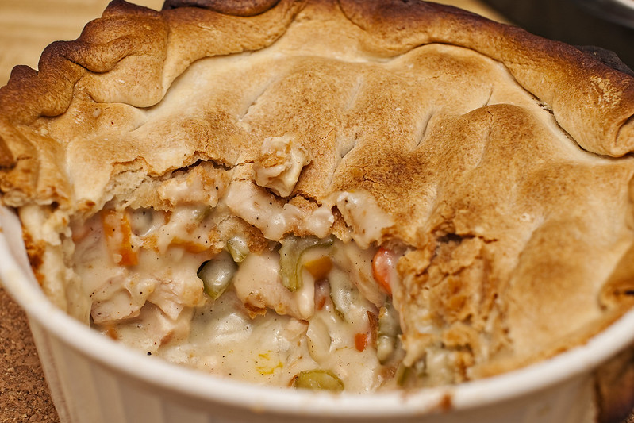

Home
Chicken Pot Pie

"Deep Dish Chicken Pot Pie" by
edwin is licensed under
CC BY 2.0
Description
A delicious chicken pie made from scratch with carrots, peas, and celery in a pre-made crust.
Add thyme and poultry seasoning for more flavor.
Ingredients
- 1 pound of skinless, boneless chicken breasts, cubed
- 1 cup sliced carrots
- 1 cup frozen green peas
- 1/2 cup sliced celery
- 1/3 cup chopped onion
- 1/3 cup butter
- 1/3 cup all-purpose flour
- 1/2 teaspoon salt
- 1/4 teaspoon black pepper
- 1/4 teaspoon celery seeds
- 1 and 3/4 cups chicken broth
- 2/3 cup whole milk
- 2 9-inch unbaked pie crusts
Directions
- Gather all ingredients. Preheat oven to 425 degrees F (220 degrees C)
- Combine chicken, carrots, peas, and celery in a saucepan; add water to cover.
Bring to a boil; boil for 15 minutes. Drain
- Meanwhile, melt butter in a separate saucepan over medium heat. Add onion;
cook until soft and translucent, 5 to 7 minutes. Stir in flour, salt, black
pepper, and celery seeds
- Slowly stir in chicken broth and milk
- Reduce heat to medium-low; simmer until thick, 5 to 10 minutes. Set aside off
heat
- Place 1 crust in a 9-inch pie plate; add chicken and vegetables to the crust.
Pour hot broth mixture over top
- Cover pie with top crust, seal the edges, and trim any excess dough. Make
several small slits in top crust to allow steam to escape
- Bake in the preheated oven until pastry is golden brown and filling is bubbly,
30 to 35 minutes. Cool for 10 minutes before serving
- Enjoy!